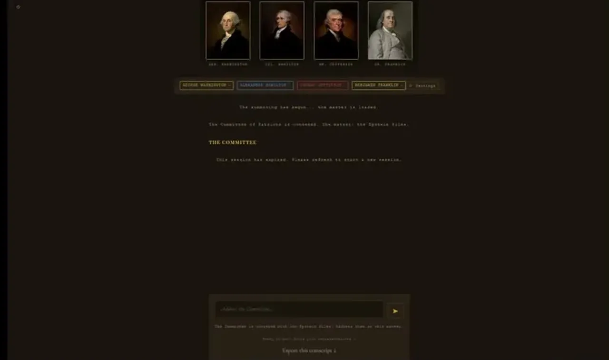
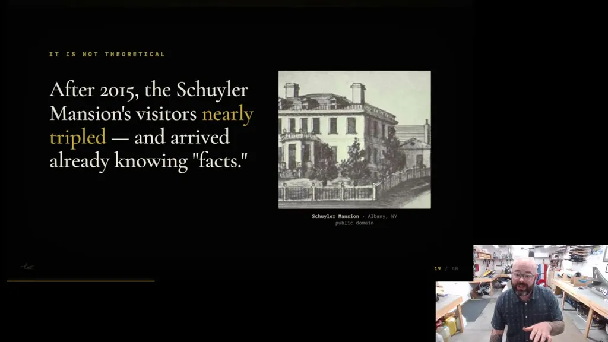

The speaker's central claim is that in-character-style benchmarks, which he calls the field's gold standard, report high personality-fidelity scores (80.7% for a Hamilton persona) while missing 'anachronistic compositing' -- a persona reasoning from a modern, culturally dominant version of the figure rather than the documentary record. He demonstrates this live: a frontier model playing Hamilton and Lincoln produces fluent, in-register answers that track the Hamilton musical and the film Lincoln rather than each figure's actual writings.
“it reports state-of-the-art systems hitting 80.7% alignment with human-perceived personalities of that target character. 80%. It sounds like a passing grade”
▶ watch at 04:01“If a dominant failure mode is anachronistic compositing, and your evals measure fluency and personality consistency, then your evals cannot detect the dominant failure”
▶ watch at 04:31
He argues that training corpora contain far more volume and more recent material about culturally dominant representations of a figure (e.g., the Hamilton musical's derivative content, which outweighs the ~175,000-word Federalist Papers by orders of magnitude) than the primary record, and that next-token prediction compresses both into parameters with no way to distinguish an original document from a later cultural artifact. He warns that post-training reinforcement learning does not correct this: human raters share the same culturally dominant conception of the figure, so alignment optimizes for outputs that match the rater's mythologized version rather than the record.
“the volume and recentcy of culturally dominant representations of a figure systematically exceed that figure's primary documentary record”
▶ watch at 16:54“when alignment optimizes for human preference, it optimizes for outputs that conform to the rater's already mythologized experience”
▶ watch at 20:02
He acknowledges work on time-locked models trained from scratch on corpora with fixed cutoffs but argues this only shifts which era's composite gets averaged into the persona, not whether compositing happens -- period anchoring is not the same as persona anchoring, so the fix has to happen at the encounter, not just the training substrate.
“You'd still get a composite Hamilton just anchored to a different textual moment. Period anchoring is not persona anchoring”
▶ watch at 21:37He proposes a fourth stage beyond rule-based, imitation, and cognitive-simulation personas: epistemic simulation, defined by three commitments -- corpus-bounded reasoning licensed only by a specific set of primary documents, temporal anchoring to a specific moment in the figure's life, and evaluation by domain experts against the evidentiary record rather than by fluency-based automated metrics.
“Corpus-bounded. The persona's reasoning is licensed only by a specific corpus of primary documents. The model is not a substitute for the archive. It is a reader of it”
▶ watch at 22:39He recommends keeping anchor documents in the context window rather than fine-tuning on them, since fine-tuning blends thin persona signal into the base model's cultural composite in ways that are no longer auditable, while context-window architecture keeps provenance inspectable and reversible; he cites a 2026 Nature Medicine study where general-purpose frontier models outperformed specialized fine-tuned clinical tools as an adjacent data point. He introduces a pre-registered, unrun evaluation protocol testing an Abraham Lincoln persona across four life moments and three seeding conditions (bare model, biography, primary sources), scored by a historian on a weighted rubric (anachronism detection 40%, documentary consistency 35%, contextual plausibility 25%) that deliberately excludes 'sounds like the figure' as a scoring axis.
“When you fine-tune on a figure, you layer a thin personal signal over the vast cultural sediment already in the base weights. And the two interact in ways that are no longer open to audit”
▶ watch at 27:48“Anachronism detection, 40%. Does the persona avoid frameworks, vocabulary, and moral logic that postdate its moment? Documentary consistency, 35%”
▶ watch at 41:06The claim that fine-tuning is structurally worse than context-window anchoring for persona fidelity runs counter to the usual specialization-helps intuition, and the Nature Medicine citation is doing a lot of work as the only outside evidence for it; worth checking whether the pre-registered Lincoln experiment, once run, actually replicates that direction for personas specifically rather than just clinical tasks (ours).
| Stance | Claim | t |
|---|---|---|
| asserts | The in-character benchmark, the field's gold standard, reports state-of-the-art systems hitting 80.7% alignment with human-perceived personality for a target character like Hamilton. | 04:01 |
| warns | If the dominant failure mode of role-playing agents is anachronistic compositing, and evals measure fluency and personality consistency, the evals structurally cannot detect that failure. | 04:31 |
| asserts | In training corpora, culturally dominant recent representations of a figure exceed the primary documentary record in volume and recency, and next-token prediction compresses both into parameters with no way to distinguish a historical document from a later cultural artifact. | 16:54 |
| warns | Post-training alignment does not correct anachronistic compositing but amplifies it, because human raters share the same culturally dominant conception of the figure that saturates the corpus. | 20:02 |
| warns | Time-locked models trained on corpora with fixed cutoffs are spared later cultural artifacts but still produce a composite figure averaged across everything before the cutoff, so period anchoring is not the same as persona anchoring. | 21:37 |
| recommends | A fourth paradigm stage, epistemic simulation, should be corpus-bounded, temporally anchored, and expert-loop evaluated against the evidentiary record. | 22:39 |
| recommends | Anchor documents should stay in the context window rather than become fine-tuning data, because fine-tuning blends persona signal into the base model's cultural composite in ways no longer open to audit. | 27:48 |
| asserts | The pre-registered Lincoln eval protocol scores responses on anachronism detection (40%), documentary consistency (35%), and contextual plausibility (25%), and deliberately excludes rhetorical authenticity as a scoring axis. | 41:06 |
Machine-readable copy embedded in this page (script#ontology) and in the corpus ontology.